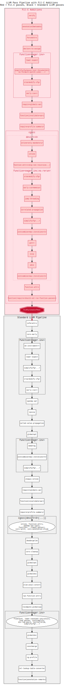

Fil's Unbelievable C Compiler
Fil-C is a fork of clang 20.1.8 that includes:
A new LLVM pass called
llvm::FilPizlonatorthat enforces garbage in, memory safety out semantics: either the pass will fail to generate any output (the compiler will crash), or the generated IR follows the memory safety doctrine of Fil-C. So, the resulting code will get a Fil-C panic if it does something that violates the rules but otherwise has identical semantics to normal C/C++.Surgical changes to the clang frontend, including:
Small changes in clang CodeGen to make the generated LLVM code consistently use the
ptrtype for pointers as well as other tweaks to make the code obey Fil-C rules. In cases where CodeGen fails to obey these rules, the Fil-C checks end up being overzealous and a perfectly valid C or C++ program might get a Fil-C panic.Changes to the clang Driver, mostly to support the pizfix slice.
Changes to BackendUtil.cpp to use a Fil-C pass pipeline that invokes the
FilPizlonator.
Surgical changes to LLVM itself, to remove or slightly tweak optimizations that fail to follow Fil-C rules. These changes only affect passes when they run before
FilPizlonatorin the pipeline. In particular,DataLayouthas a method to detect if the IR must follow Fil-C rules.
The FilPizlonator
This pass applies memory safety rules to every single construct in LLVM IR, including:
All memory access instructions, including SIMD memory access intrinsics.
All control flow instructions, including computed goto (i.e.
indirectbr) and function calls. Function calls check that the pointer you're calling is a valid function and the calling convention is totally changed to ensure that type confusion of arguments and return values has safe outcomes.All kinds of allocations (globals and
allocas).All linker shenanigans (including ifuncs, comdats, etc).
All assembly (module level and inline). In practice this means that assembly is effectively disallowed (but blank assembly idioms, which are super common, work as expected).
Everything else in LLVM IR.
FilPizlonator will turn code into an always-panic if it doesn't know how to check it. If the code is particularly evil, FilPizlonator will simply crash and refuse to compile.
FilPizlonator also has extensive support for accurate GC, including:
Inserting pollchecks at back edges.
Tracking pointers in Pizderson frames. A Pizderson frame is like a Henderson frame except optimized for non-moving GC. Pointer register allocation is still possible since pointers are just mirrored into Pizderson frames, as opposed to being outright stored there like a Henderson frame.
FilPizlonator started out as a zero-optimizations, instrument-everything-with-function-calls style, since I wasn't even sure if the technique would conceptually work out. Since it did work out, many optimizations have been added:
Allocations and many other intrinsic operations are now inlined.
Bounds checks are scheduled and redundant ones are removed. (However, this is an area that could be massively improved).
Local variables are escape-analyzed so that those that are treated as escaping for SROA, but don't actually escape in the classic sense, are stack-allocated rather than heap-allocated.
Many other small optimizations.
The Fil-C Pass Pipeline
Below is a graphic showing the Fil-C pass pipeline.

Fil-C reuses the LLVM pass pipeline after FilPizlonator, and also runs a mini version of that pipeline before FilPizlonator. The pre-pizlonating passes achieve:
Promotion of locals to registers. This is the job of passes like SROA. Note, due to clang CodeGen and SROA changes, SROA will give up on any local that has
union-like behavior. This is whyFilPizlonator's escape analysis capability is so important.Inlining.
Elimination of obviously redundant loads and stores.
Lots of other optimizations (like all of the ones in InstCombine).